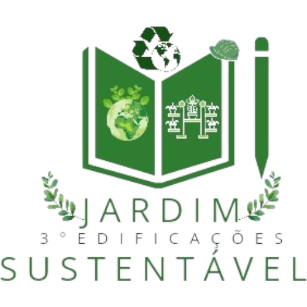

Sobre
Fotos
Vídeos
Bem-vindo ao Jardim Sustentável
Descubra o impacto positivo das plantas no nosso mundo e como podemos promover a sustentabilidade.
Explore as Fotos
Fotos de Fotos
Vídeos do Projeto
Seu navegador não suporta a tag de vídeo.
Seu navegador não suporta a tag de vídeo.